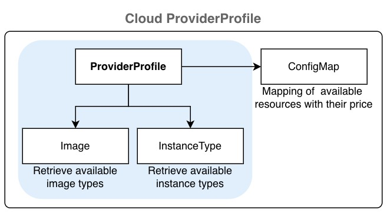
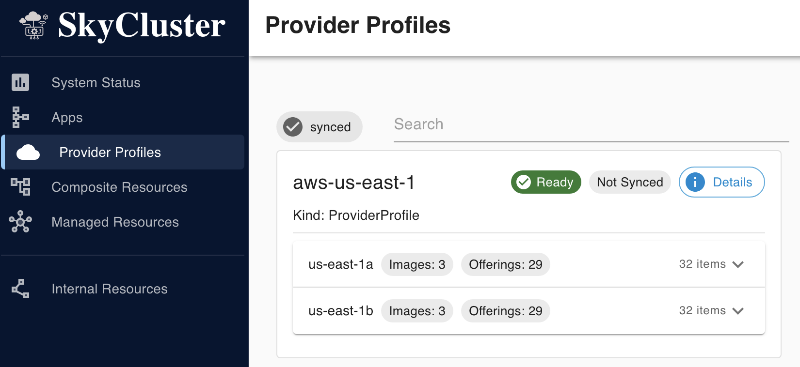
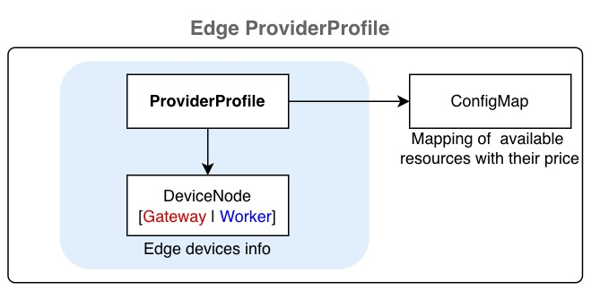

Providers Profiles#
By creating a ProviderProfile resource, you can register cloud and on-premises providers with SkyCluster. When a provider profile is created, the SkyCluster operator automatically detects available images and instance types for major cloud providers such as AWS, Azure, and GCP. For OpenStack and baremetal providers, these services must be configured manually.
Quick jump to:
Setting Up Cloud Providers#
A provider is identified by its platform name and region and primary zone. When you create a ProviderProfile for a (cloud) provider, the SkyCluster operator automatically detects available images and instance types for major cloud providers such as AWS, Azure, and GCP by creating Image and InstanceType resources and stores the information in a ConfigMap in the skycluster-system namespace.
{kind=link}

The following examples show how to configure the a ProfileProvider. Create a YAML file with the content below and use it with skycluster profile create -f <file> command.
platform: aws # Platform can be aws, azure, gcp
region: us-east-1 # Region identifier
regionAlias: us-east
continent: north-america
enabled: true
zones:
- name: us-east-1a # Zone identifier
locationName: us-east-1a
defaultZone: true # Only one zone can be default
enabled: true
type: cloud # Optional
- name: us-east-1b # Zone identifier
locationName: us-east-1b
defaultZone: false
enabled: true
type: cloud # Optional
platform: gcp # Platform can be aws, azure, gcp
region: us-east1 # Region identifier
regionAlias: us-east
continent: north-america
enabled: true
zones:
- name: us-east1-b # Zone identifier
locationName: us-east1-b
defaultZone: true # Only one zone can be default
enabled: true
type: cloud # Optional
- name: us-east1-c # Zone identifier
locationName: us-east1-c
defaultZone: false
enabled: true
type: cloud # Optional
Warning
Azure support is limited and some features may not work.
platform: azure # Platform can be aws, azure, gcp
region: eastus # Region identifier
regionAlias: eastus
continent: north-america
enabled: true
zones:
- name: "1" # Zone identifier
locationName: eastus-1
defaultZone: true # Only one zone can be default
enabled: true
type: cloud # Optional
- name: "2" # Zone identifier
locationName: eastus-2
defaultZone: false
enabled: true
type: cloud # Optional
Then apply the configuration by running the following command:
skycluster profile create -f <provider-profile-file>.yaml -n <provider-name>
After creating a ProfileProvider resource, the SkyCluster operator generates a ConfigMap in the skycluster-system namespace containing the available images and instance types for that provider. Verify that the provider profile is ready by checking its status:
skycluster profile list
# NAME REGION READY
# aws-us-east-1 us-east-1 Ready
# optional: You can also verify the created ConfigMap
# List the config maps for the provider profile
kubectl get cm -n skycluster-system \
-l skycluster.io/config-type=provider-profile
# NAME DATA AGE
# aws-us-east-1-8h8j4 3 8h
# gcp-us-east1-lfp95 3 8h
You can also check the status of ProviderProfile resource and its dependency within dashboard:
{kind=link}

Setting Up On-premises Providers#
OpenStack#
Similar to cloud provider, an on-premises or private cloud (openstack platform) is identified by its platform name and region and primary zone. In contrast to major cloud providers, the SkyCluster operator cannot automatically detect available images and instance types for on-premises providers. Therefore, you need to create dependency
resources to for the provider manually. The following example shows how to configure the OpenStack
provider for the on-premises savi edge cluster with scinet region with primary zone default.
Provider Profiles#
platform: openstack
region: scinet
regionAlias: scinet # Optional
continent: north-america # Optional
enabled: true
zones:
- name: default
locationName: default # Optional
defaultZone: true
enabled: true
type: edge
Note
ProviderProfile status becomes Ready when the dependency resources are created for the provider. Check out
the status of the ProviderProfile resource by running the following command. You should see the Ready
status set to False when you create the object for the first time. It will change to True once the
dependency objects are created.
skycluster profile list
# NAME REGION READY
# savi-scinet-default scinet False
The operator creates a config map for each provider profile that constains offerings by the provider. You can verify the config map by running the following command:
# Change the label value to match your provider profile name
kubectl get configmap -n skycluster-system \
-l skycluster.io/provider-profile=savi-scinet-default
Dependency Resources#
The following dependency resources are needed to
ensure ProviderProfile becomes ready and can be used. These resources must be created directly using kubectl apply -f <file>.yaml within the skycluster-system namespace.
Images#
You need to configure the available images manually in skycluster-system namespace for on-premises providers.
The following example shows how to configure images including ubuntu-20.04, ubuntu-22.04 and ubuntu-24.04 for the savi-scinet-default provider profile for the scinet region.
apiVersion: core.skycluster.io/v1alpha1
kind: Image
metadata:
name: savi-scinet-default-images
namespace: skycluster-system
spec:
providerRef: savi-scinet-default
# Must match the provider profile name in the Provider resource
images:
- zone: default
nameLabel: ubuntu-20.04
name: ubuntu-20.04 # Local identifier corresponding to the image
- zone: default
nameLabel: ubuntu-22.04
name: ubuntu-22.04 # Local identifier corresponding to the image
- zone: default
nameLabel: ubuntu-24.04
name: ubuntu-24.04 # Local identifier corresponding to the image
Check the status of Image resource by running the following command:
kubectl get images.core.skycluster.io -n skycluster-system
# NAME REGION READY
# savi-scinet-default-images scinet True
Instance Type#
To configure the instance types, you need to create an InstanceType resource in skycluster-system namespace. The following example shows how to introduce available instance types. Use kubectl apply -f <file>.yaml to create the resource.
apiVersion: core.skycluster.io/v1alpha1
kind: InstanceType
metadata:
name: savi-scinet-default-instance-types
namespace: skycluster-system
spec:
providerRef: savi-scinet-default
# Must match the provider name in the Provider resource
offerings:
- zone: default
zoneOfferings:
- name: m1.small
nameLabel: 1vCPU-2GB
generation: m1
# we don't consider spot pricing for on-premises providers
price: "0.0015"
ram: 2GB
vcpus: 1
gpu:
count: 1
enabled: true
manufacturer: NVIDIA
model: T4
memory: 16GB
- name: n1.small
nameLabel: 1vCPU-4GB
vcpus: 1
ram: 4GB
price: "0.02"
Check the status of the InstanceType resource by running the following command:
kubectl get instancetype.core.skycluster.io -n skycluster-system
# NAME REGION READY
# savi-scinet-default-instance-types scinet True
Once all dependency resources are created and ready, the ProviderProfile status changes to Ready. At this point, you can use the provider profile to create resources in your cluster. To verify its status, run:
skycluster profile list
# NAME REGION READY
# savi-scinet-default scinet True
Edge Providers#
{kind=link}

Edge providers can be registered similarly to cloud providers but you must create DeviceNode resources in skycluster-system namespace to supply edge device configuration such as the gateway node address, required keys, and edge-device details.
Provider Profiles#
platform: baremetal
region: toronto
regionAlias: toronto # Optional
continent: north-america # Optional
enabled: true
zones:
- name: default
locationName: BahenBuilding # Optional
defaultZone: true
enabled: true
type: edge
The baremetal type requires specifying gateway connection and access details, along with worker node data and their capabilities. You must configure this by creating DeviceNode resources:
Device Nodes#
The DeviceNode API represents an edge device that can run workloads. A DeviceNode resource can be defined as either a gateway or a worker node by setting its type field. By default the gateway node does not run any workload. The DeviceNode resource are created in the skycluster-system namespace. Use kubectl apply -f <file>.yaml to create the resource. The following examples show how to configure a gateway node and a worker node for the savi-toronto-edge provider profile defined above.
apiVersion: core.skycluster.io/v1alpha1
kind: DeviceNode
metadata:
name: savi-toronto-gw
namespace: skycluster-system
spec:
providerRef: savi-toronto-default
deviceSpec:
type: gateway
zone: default
publicIp: x.y.z.w
# by default the subnet mask is /24 for this network
privateIp: 10.23.100.22
auth:
privateKeySecretRef:
# secret containing the private SSH key, see below
name: savi-toronto-edge-ssh-key
key: privateKey
username: ubuntu
apiVersion: core.skycluster.io/v1alpha1
kind: DeviceNode
metadata:
name: savi-toronto-edge-jetson-nano1
namespace: skycluster-system
spec:
providerRef: savi-toronto-edge
deviceSpec:
type: worker
zone: default
privateIp: 10.23.100.200
# must be reachable from the gateway node
auth:
username: ubuntu
# same private key as the gateway node will be used
configs:
name: Jetson Nano
cpus: 1
ram: 4GB
gpu:
count: 472
unit: GFLOPS # GFLOPS | TFLOPS | TOPS | GPU
enabled: true
manufacturer: NVIDIA
memory: Maxwell
model: JetsonNano
storage: 100GB
price: "0"
NVIDIA Device Preparation#
SkyCluster supports DeviceNode resources equipped with NVIDIA GPUs by installing a local K3s cluster and joining the devices as worker nodes. To enable GPU workloads, the devices must have the NVIDIA Container Runtime installed. Since installation steps vary depending on the device specifications (e.g., Jetson, desktop GPUs), you need to follow the official NVIDIA instructions to set up the toolkit. This toolkit allows containers to access the GPU resources on the Jetson device, enabling GPU-accelerated applications to run smoothly.
After setting up the toolkit, ensure that your containerized applications are configured to utilize the GPU resources effectively. You may need to specify the appropriate runtime and environment variables in your container configurations to leverage the GPU capabilities.